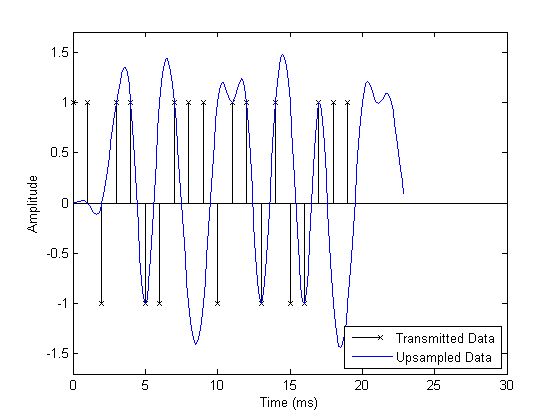
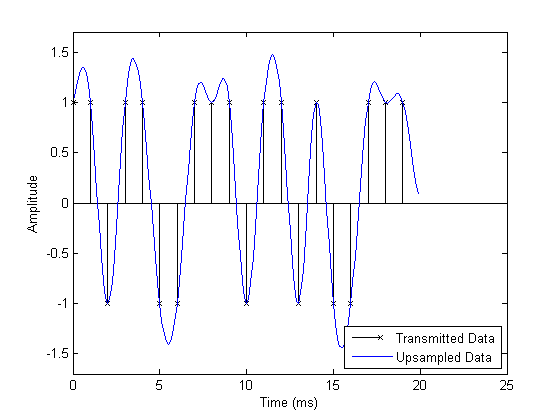
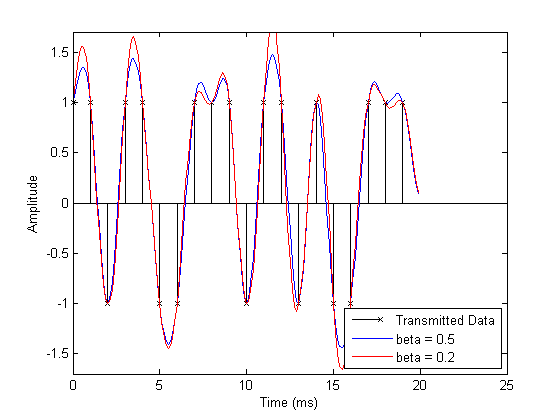
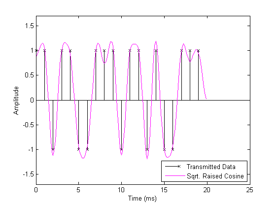
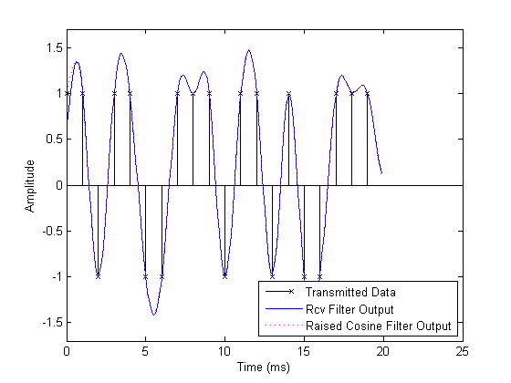
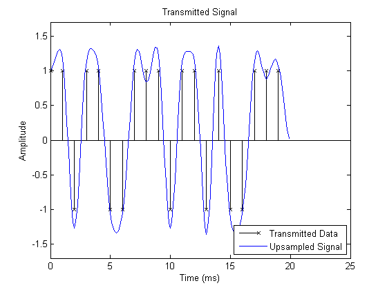
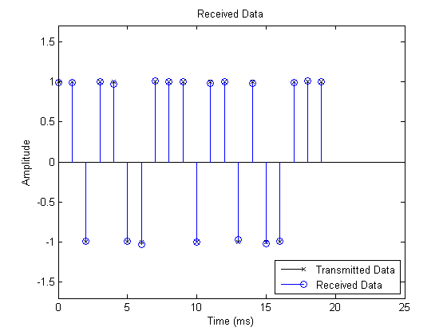

Raised Cosine Filtering
This demonstration uses pulse shaping filter designer (FDESIGN.PULSESHAPING), interpolation filter designer (FDESIGN.INTERPOLATOR), and decimation filter designer (FDESIGN.DECIMATOR) to demonstrate the intersymbol interference (ISI) rejection capability of the raised cosine filter, and how to split the raised cosine filtering between transmitter and receiver.
Contents
Raised Cosine Filter Design
The main parameter of a raised cosine filter is its roll-off factor, beta, which indirectly specifies the bandwidth of the filter. Ideal raised cosine filters have an infinite number of taps. Therefore, practical raised cosine filters are windowed. The window length can be controlled in three ways: filter order, filter order in symbol durations, and minimum order to achieve a given stopband attenuation. In this demo, we specify the filter order as six symbol durations, i.e., the filter spans six symbol durations. Such a filter also has a group delay of three symbol durations. Raised cosine filters are used for pulse shaping, where the signal is upsampled. Therefore, we also need to specify the upsampling factor. The following is a list of parameters used to design the raised cosine filter for this demo.
Nsym = 6; % Filter order in symbol durations beta = 0.5; % Roll-off factor sampsPerSym = 8; % Upsampling factor
We use FDESIGN.PULSESHAPING to store the specifications of the raised cosine filter.
% Shape of the pulse shaping filter shape = 'Raised Cosine'; % Specifications of the raised cosine filter with given order in symbols rcosSpec = fdesign.pulseshaping(sampsPerSym, shape, 'Nsym,beta', Nsym, beta)
rcosSpec =
Response: 'Pulse Shaping'
PulseShape: 'Raised Cosine'
SamplesPerSymbol: 8
Specification: 'Nsym,Beta'
Description: {'Filter Order in Symbols';'Rolloff Factor'}
NormalizedFrequency: true
NumberOfSymbols: 6
RolloffFactor: 0.5
We design a direct-form FIR filter based on these specifications. The filter has an order of Nsym*sampsPerSym, or Nsym*sampsPerSym+1 taps. We normalize filter the filter coefficients so that the filtered and unfiltered data matches when overlayed.
rcosFlt = design(rcosSpec); rcosFlt.Numerator = rcosFlt.Numerator / max(rcosFlt.Numerator); disp(rcosFlt)
FilterStructure: 'Direct-Form FIR'
Arithmetic: 'double'
Numerator: [1x49 double]
PersistentMemory: false
Pulse Shaping with Raised Cosine Filters
We generate a digital sequence that is upsampled by zero-padding before filtering. We use the raised cosine filter to shape the waveform without introducing ISI.
% Parameters. DataL = 20; % Data length in symbols R = 1000; % Data rate Fs = R * sampsPerSym; % Sampling frequency % Create a local random stream to be used by random number generators for % repeatability. hStr = RandStream('mt19937ar', 'Seed', 0); % Generate random data. x = 2*randi(hStr, [0 1], DataL, 1)-1; % Time vector sampled at symbol rate in milliseconds tx = 1000 * (0: DataL - 1) / R;
The plot compares the digital data and the upsampled, filtered signal. It is difficult to compare the two signals because the peak response of the filter is delayed by the group delay of the filter (Nsym/(2*R)). Note that, we append Nsym/2 zeros at the end of X to flush all the useful samples out of the filter.
% Upsample and filter. yo = filter(rcosFlt, upsample([x; zeros(Nsym/2,1)], sampsPerSym)); % Time vector sampled at sampling frequency in milliseconds to = 1000 * (0: (DataL+Nsym/2)*sampsPerSym - 1) / Fs; % Plot data. fig1 = figure; stem(tx, x, 'kx'); hold on; % Plot filtered data. plot(to, yo, 'b-'); hold off; % Set axes and labels. axis([0 30 -1.7 1.7]); xlabel('Time (ms)'); ylabel('Amplitude'); legend('Transmitted Data', 'Upsampled Data', 'Location', 'southeast')
This step compensates for the raised cosine filter group delay by delaying the input signal. Now it is easy to see how the raised cosine filter upsamples and filters the signal. The filtered signal is identical to the delayed input signal at the input sample times. This demonstrates the raised cosine filter capability to band-limit the signal while avoiding ISI.
% Filter group delay, since raised cosine filter is linear phase and % symmetric. fltDelay = Nsym / (2*R); % Correct for propagation delay by removing filter transients yo = yo(fltDelay*Fs+1:end); to = 1000 * (0: DataL*sampsPerSym - 1) / Fs; % Plot data. stem(tx, x, 'kx'); hold on; % Plot filtered data. plot(to, yo, 'b-'); hold off; % Set axes and labels. axis([0 25 -1.7 1.7]); xlabel('Time (ms)'); ylabel('Amplitude'); legend('Transmitted Data', 'Upsampled Data', 'Location', 'southeast')
Roll-off Factor
This step demonstrates the effect that changing the roll-off factor from .5 (blue curve) to .2 (red curve) has on the resulting filtered output. The lower value for roll-off causes the filter to have a narrower transition band causing the filtered signal overshoot to be greater for the red curve than for the blue curve.
% Set roll-off factor to 0.2 rcosSpec.RolloffFactor = 0.2; % Design and normalize filter. rcosFlt2 = design(rcosSpec); rcosFlt2.Numerator = rcosFlt2.Numerator / max(rcosFlt2.Numerator); % Upsample and filter. yo1 = filter(rcosFlt2, upsample([x; zeros(Nsym/2,1)], sampsPerSym)); % Correct for propagation delay by removing filter transients yo1 = yo1(fltDelay*Fs+1:end); % Plot data. stem(tx, x, 'kx'); hold on; % Plot filtered data. plot(to, yo, 'b-',to, yo1, 'r-'); hold off; % Set axes and labels. axis([0 25 -1.7 1.7]); xlabel('Time (ms)'); ylabel('Amplitude'); legend('Transmitted Data', 'beta = 0.5', 'beta = 0.2', 'Location', 'southeast')
Square-Root Raised Cosine Filters
A typical use of raised cosine filtering is to split the filtering between transmitter and receiver. Both transmitter and receiver employ square-root raised cosine filters. The combination of transmitter and receiver filters is a raised cosine filter, which results in minimum ISI. We specify a square-root raised cosine filter by setting the shape as 'Square Root Raised Cosine'.
% Shape of the pulse shaping filter shape = 'Square Root Raised Cosine'; % Design raised cosine filter with given order in symbols sqrtRcosSpec = fdesign.pulseshaping(sampsPerSym, shape, 'Nsym,beta', Nsym, beta)
sqrtRcosSpec =
Response: 'Pulse Shaping'
PulseShape: 'Square Root Raised Cosine'
SamplesPerSymbol: 8
Specification: 'Nsym,Beta'
Description: {'Filter Order in Symbols';'Rolloff Factor'}
NormalizedFrequency: true
NumberOfSymbols: 6
RolloffFactor: 0.5
We design the filter using the specification, sqrtRcosSpec. The data stream is upsampled and filtered at the transmitter using the designed filter. This plot shows the transmitted signal when filtered using the square-root raised cosine filter.
% Design and normalize filter. sqrtRcosFlt = design(sqrtRcosSpec); normFact = max(sqrtRcosFlt.Numerator); sqrtRcosFlt.Numerator = sqrtRcosFlt.Numerator / normFact; % Upsample and filter. yc = filter(sqrtRcosFlt, upsample([x; zeros(Nsym/2,1)], sampsPerSym)); % Correct for propagation delay by removing filter transients yc = yc(fltDelay*Fs+1:end); % Plot data. stem(tx, x, 'kx'); hold on; % Plot filtered data. plot(to, yc, 'm-'); hold off; % Set axes and labels. axis([0 25 -1.7 1.7]); xlabel('Time (ms)'); ylabel('Amplitude'); legend('Transmitted Data', 'Sqrt. Raised Cosine', 'Location', 'southeast')
The transmitted signal (magenta curve) is then filtered at the receiver. We did not decimate the filter output to show the full waveform. Normalization ensures that the gain of the combination of the transmit and receive filters is the same as the gain of a normalized raised cosine filter. The filtered received signal, which is virtually identical to the signal filtered using a single raised cosine filter, is depicted by the blue curve at the receiver.
% Design and normalize filter. sqrtRcosFltRcv = design(sqrtRcosSpec); sqrtRcosFltRcv.Numerator = sqrtRcosFltRcv.Numerator * (normFact*sampsPerSym); % Filter at the receiver. yr = filter(sqrtRcosFltRcv, [yc; zeros(Nsym*sampsPerSym/2, 1)]); % Correct for propagation delay by removing filter transients yr = yr(fltDelay*Fs+1:end); % Plot data. stem(tx, x, 'kx'); hold on; % Plot filtered data. plot(to, yr, 'b-',to, yo, 'm:'); hold off; % Set axes and labels. axis([0 25 -1.7 1.7]); xlabel('Time (ms)'); ylabel('Amplitude'); legend('Transmitted Data', 'Rcv Filter Output', 'Raised Cosine Filter Output', 'Location', 'southeast')
Multirate Filters for Pulse Shaping
Pulse shaping filtering can be performed in a more efficient manner with multirate filters. Filter Design Toolbox™ provides FDESIGN.INTERPOLATOR and FDESIGN.DECIMATOR to store the specifications of multirate filters. We design a direct-form FIR polyphase interpolation filter using these specifications.
% Design polyphase interpolation filters rcosInterpSpec = fdesign.interpolator(sampsPerSym, 'Square Root Raised Cosine', ... sampsPerSym, 'Nsym,Beta', Nsym, beta); rcosInterp = design(rcosInterpSpec)
rcosInterp =
FilterStructure: 'Direct-Form FIR Polyphase Interpolator'
Arithmetic: 'double'
Numerator: [1x49 double]
InterpolationFactor: 8
PersistentMemory: false
Design polyphase decimation filters
rcosDecimSpec = fdesign.decimator(sampsPerSym, 'Square Root Raised Cosine', ... sampsPerSym, 'Nsym,Beta', Nsym, beta); rcosDecim = design(rcosDecimSpec)
rcosDecim =
FilterStructure: 'Direct-Form FIR Polyphase Decimator'
Arithmetic: 'double'
Numerator: [1x49 double]
DecimationFactor: 8
PersistentMemory: false
We filter and interpolate the data using the rcosInterp filter. Then, we filter and decimate at the receiver using rcosDecim filter. The filtering results are exactly the same as the conventional FIR filter.
% Filter and interpolate at the transmitter. yo2 = filter(rcosInterp, [x; zeros(Nsym/2,1)]); % Filter and decimate at the receiver. yr2 = filter(rcosDecim, [yo2; zeros(Nsym*sampsPerSym/2, 1)]); % Correct for propagation delay by removing filter transients yr2 = yr2(2*fltDelay*R+1:end); % Plot data. stem(tx, x, 'kx'); hold on; % Plot filtered data. plot(to, yo2(fltDelay*Fs+1:end), 'b-'); hold off; title('Transmitted Signal') % Set axes and labels. axis([0 25 -1.7 1.7]); xlabel('Time (ms)'); ylabel('Amplitude'); legend('Transmitted Data','Upsampled Signal', 'Location', 'southeast') fig2 = figure; % Plot data. stem(tx, x, 'kx'); hold on; title('Received Data') % Plot filtered data. stem(tx, yr2, 'bo'); hold off; % Set axes and labels. axis([0 25 -1.7 1.7]); xlabel('Time (ms)'); ylabel('Amplitude'); legend('Transmitted Data','Received Data', 'Location', 'southeast') 
Even though the filtering results are exactly the same, the computational cost of a polyphase filter is less. In the following table, we compare the computational cost of a conventional FIR filter, which can be used both at the receiver and the transmitter, polyphase FIR interpolation filter, and polyphase FIR decimation filter.
C1 = cost(sqrtRcosFlt); C2 = cost(rcosInterp); C3 = cost(rcosDecim);
------------------------------------------------------------------------
Implementation Cost Comparison
------------------------------------------------------------------------
Multipliers Adders Mult/Symbol Add/Symbol
Conventional FIR 48 48 384 384
Multirate Interpolator 49 41 49 41
Multirate Decimator 49 48 6.125 6For more information on pulse shaping filter design, including alternatives to raised cosine and square root raised cosine filters, see the Pulse Shaping Filter Design demo in Filter Design Toolbox.